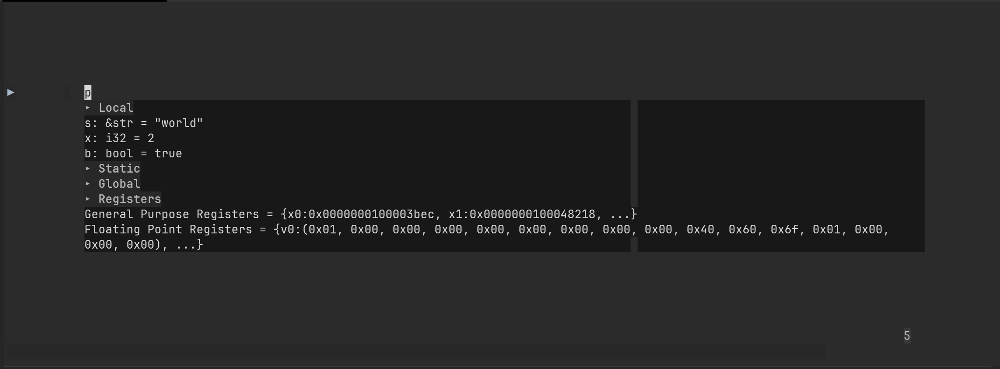
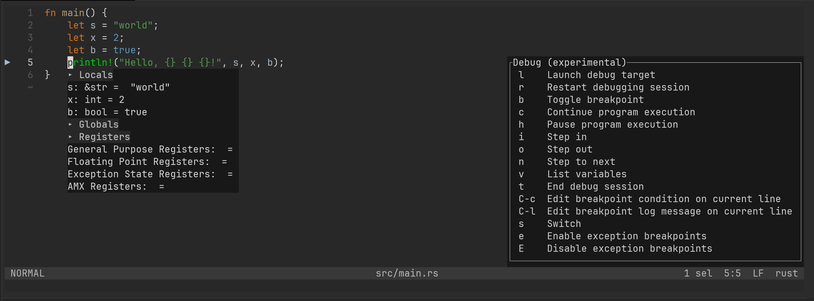

Quan Tong
Quan Tong
Debug Rust in Helix using lldb-vscode: display the contents of local string variables
2023-08-11
Categories: Development Environment
In a previous post titled debugging Rust in Helix,
I introduced a workaround using codelldb to address the visualization issue related to string variables within lldb-vscode.
However, the usage of codelldb presents some challenges:
- We have to start the server first using
codelldb --port 13000 - It is noticeably slow
- The Helix theme breaks when listing variables

In my quest for an improved debugging experience, I found rust-lldb, which impressively manages to display the contents of string variables:
(lldb) b src/main.rs:5
Breakpoint 1: where = hello_cargo`hello_cargo::main::h24135e338b19c0c6 + 212 at main.rs:5:5, address = 0x0000000100003cc0
(lldb) run
Process 62497 launched: '/Users/quantong/Code/personal/rust/1-getting-started/hello_cargo/target/debug/hello_cargo' (arm64)
Process 62497 stopped
* thread #1, name = 'main', queue = 'com.apple.main-thread', stop reason = breakpoint 1.1
frame #0: 0x0000000100003cc0 hello_cargo`hello_cargo::main::h24135e338b19c0c6 at main.rs:5:5
2 let s = "world";
3 let x = 2;
4 let b = true;
-> 5 println!("Hello, {} {} {}!", s, x, b);
6 }
(lldb) frame variable
(&str) s = "world" {
data_ptr = 0x0000000100039d70 "worldHello, !\n"
length = 5
}
(int) x = 2
(bool) b = true
The enhanced functionality of rust-lldb is achieved by executeing specific LLDB commands before loading the program:
$ rust-lldb target/debug/hello_cargo
(lldb) command script import "/opt/homebrew/Cellar/rust/1.71.0/lib/rustlib/etc/lldb_lookup.py"
(lldb) command source -s 0 '/opt/homebrew/Cellar/rust/1.71.0/lib/rustlib/etc/lldb_commands'
Executing commands in '/opt/homebrew/Cellar/rust/1.71.0/lib/rustlib/etc/lldb_commands'.
Prompted by this success, the question arose whether we could integrate these steps into lldb-vscode.
As it turns out, accomplishing this is possible by using initCommands
Add the following to ~/.config/helix/languages.toml:
[[language]]
name = "rust"
[language.debugger]
name = "lldb-vscode"
transport = "stdio"
command = "lldb-vscode"
[[language.debugger.templates]]
name = "binary"
request = "launch"
completion = [ { name = "binary", completion = "filename" } ]
args = { program = "{0}", initCommands = [ "command script import /opt/homebrew/Cellar/rust/1.71.0/lib/rustlib/etc/lldb_lookup.py", "command source -s 0 /opt/homebrew/Cellar/rust/1.71.0/lib/rustlib/etc/lldb_commands" ] }
then you can debug as usual:
<Space>, thengto go to Debugbto toggle breakpointlto launch debug target- enter the binary path, then return

Tags: helix dap lldb-vscode codelldb